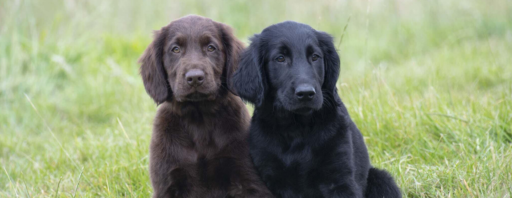

Our dogs have always been our most loyal companions, so it's only natural that we want to know as much as we can about them. Keep reading for our top 15 dog facts that you won't believe!
Our dogs have always been our best friends, our loyal companions and most importantly, our family. So it’s only natural that we are completely fascinated by dog facts and information. We’re utterly besotted with our four-pawed friends and want to discover absolutely everything possible about them, so when we hear a dog fact it fills us with a sense of joy and wonder.
From why dog’s noses are wet, to the tallest dog in the world, prepare to have your mind blown with these amazing dog facts.
This amazing dog fact might answer a long-standing question that dog owners have. Why are dogs noses wet? Vetstreet says that the answer is that dog’s noses are wet to help them absorb scent chemicals! Their nose secretes a special mucus that helps to absorb these chemicals, and then they lick their noses to sample them, helping them understand what the smell is.
Newfoundland dogs are the ultimate doggy lifeguards, because they have water resistant coats and webbed feet. They were originally bred as fisherman’s helpers and to rescue people from drowning.
Some owners have even reported that their Newfoundland tries to “rescue” them when they’re swimming!
In an interview in 2013, Paul McCartney said that he added a frequency only dogs can hear to the end of the Beatles song ‘A Day in the Life’. So watch your dog when you play the song! How’s that for an amazing dog fact?
Did you know that three dogs survived the sinking of the Titanic? Vetstreet states that the dogs were in first class and included a Pomeranian puppy - which her owner wrapped in a blanket to escape with, and everyone thought she was carrying a baby. Another Pomeranian and a Pekingese were also rescued. Move over Rose and Jack!
According to PBS, a Bloodhound’s sense of smell is so spot on that it can be admitted as evidence in a court of law. Now if you thought that was an incredible dog fact, prepare to have your mind blown.
Bloodhounds can also follow tracks that are over 300 hours old and can stay on a trail for over 130 miles!
The tallest dog in the world ever was a Great Dane named Zeus! Measured at 44 inches tall on October 4th 2011, he’s the current Guinness World Record holder.
If you thought all dogs barked, then prepare yourself for this dog fact. The Basenji dog doesn’t tend to bark, instead they are known to yodel, whine or scream.
A Greyhound would actually beat a Cheetah in a long distance race! According to Psychology Today, Greyhounds are excellent long distance runners and can keep a speed of 35mph for up to 7 miles.
Where the Cheetah is incredibly fast it can only keep its speed for around 200 -300 yards, so they may have the running start but it would soon be surpassed by a Greyhound!
According to the Washington Post, for eight months during 1990 a blind man named Bill Irwin hiked the Appalachian Trail with his guide dog, Orient helping him along the way. Dogs truly are man’s best friend.
If you’re a Star Wars fan you’ll love this amazing dog fact. The Los Angeles Times claims that George Lucas modelled the Ewoks after his family dog!
UFAW states that on average around 30% of Dalmatians are deaf in one ear and 5% are deaf in both. This is due to something called the extreme piebald gene which is responsible for their white coat and blue eyes (in some of them). Dalmatians with larger dark patches are less likely to be deaf.
The Guinness World Record for the oldest dog breed is held by the Saluki. The breed dates back to 329BC and were kept as royal pets in Ancient Egypt. Reportedly, there are also carvings found in Southern Iraq of a dog that looks similar to a Saluki which dates back to 7000BC.
The Chow Chow and the Shar-Pei are the only two dog breeds that have fully black tongues. Even more interesting, the cause of these black tongues is currently unknown.
Many owners haven’t heard of this interesting dog fact, but did you know that your four-legged friend has three eyelids? According to iHeartDogs, the third lid is called the ‘haw’ or nictitating membrane, and it’s responsible for keeping the eye protected and lubricated.
The African Hunting Dog is the most successful land hunter in the world. They’re successful in 50-70% of their hunts, which makes them consistently the best mammalian hunter, they even hold the current Guinness World Record for it.
So that’s our list of our top 15 most amazing dog facts! What did you think? Were you blown away by our facts, or maybe there’s an interesting dog fact you know that we didn’t mention? Let us know over on our Facebook page!